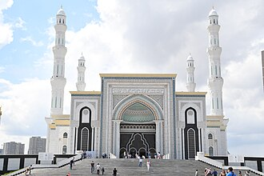

Overview
Khazret Sultan est une mosquée d'Astana. C'est la deuxième plus grande mosquée d'Asie centrale après celle de Gypjak au Turkménistan.
مسجد حضرة السلطان هو مسجد يقع في مدينة نور سلطان، كازاخستان ويعتبر أكبر مسجد في آسيا الوسطى تم افتتاحه في 6 يوليو 2012.
The Hazrat Sultan Mosque is a Friday mosque in Astana, Kazakhstan.
Hazret Sultan Camii, Kazakistan'ın başkenti Astana'da bulunan bir camidir. 2012 yılında tamamlanmış olup Kazakistan ve Orta Asya'nın en büyük camisidir. Adını Hazret Sultan olarak da anılan Türk mutassavıf ve şair Hoca Ahmed Yesevi'den almaktadır. Cami, İşim Nehri'nin sağ kıyısında Barış ve Uzlaşma Sarayı, Kazak Eli Anıtı ile Bağımsızlık Meydanı'nın bitişiğinde yer almaktadır. Caminin her biri 77 metre olan 4 minaresi bulunmaktadır. 11 hektarlık alanda kurulan caminin inşasında yaklaşık 1500 işçi çalıştı. Camide İznik çinileri kullanıldı. Geleneksel Kazak motifleri ile klasik İslam mimarisi tarzında inşa edilmiş olup inşaatı Sembol İnşaat tarafından gerçekleştirilmiştir. Cumhurbaşkanı Recep Tayyip Erdoğan 9 Eylül 2017 tarihinde Kazakistan'a gerçekleştirdiği resmi gezi sırasında camiyi ziyaret ederek caminin özel defterini imzaladı
Masjid Hazret Sultan merupakan sebuah masjid di Kota Astana, Kazakhstan. Masjid ini merupakan masjid terbesar kedua di kawasan Asia Tengah. Masjid ini dibangun dengan gaya arsitektur Islam klasik yang dipadukan dengan ornamen-ornamen khas budaya Kazakh.
حضرت سلطان مسجد قزاقستان کے نور سلطان سہر کی ایک مسجد ہے۔ یہ وسطی ایشیا کی سب سے بڑی مسجد ہے۔
Die Hazrat-Sultan-Moschee ist eine Moschee in der kasachischen Hauptstadt Astana. Erbaut zwischen 2009 und 2012 ist sie derzeit die zweitgrößte Moschee Zentralasiens.
La moschea Äzıret Sūltan – nota anche come moschea Hazrat Sultan – è un edificio di culto musulmano situato ad Astana, capitale del Kazakistan.
De Hazrat Sultan-moskee is een moskee in Astana, de hoofdstad van Kazachstan. Het werd voltooid in 2012 en is de grootste moskee in Kazachstan en Centraal-Azië. Het ontleent zijn naam aan de Turkse mysticus en dichter Hoca Ahmed Yesevi, ook bekend als Hazrat Sultan.
哈兹拉特苏丹清真寺是哈萨克斯坦首都努尔苏丹的一座清真寺。由努尔苏丹·纳扎尔巴耶夫命名为哈兹拉特苏丹，意为“神圣的苏丹”。哈兹拉特苏丹也是霍贾·艾哈迈德·亚萨维的尊称。
हज़रत सुल्तान मस्जिद कज़ाख़स्तान के अस्ताना शहर में स्थित एक जामा मस्जिद है।
Хазре́т Султа́н — мечеть в Астане. Памятник истории и культуры местного значения.
On the map
Documents and links
- Wikipédia — Français
- Wikipédia — العربية
- Wikipédia — English
- Wikipédia — Türkçe
- Wikipédia — Bahasa Indonesia
- Wikipédia — اردو
- Wikipédia — Deutsch
- Wikipédia — Italiano
- Wikipédia — Nederlands
- Wikipédia — 中文
- Wikipédia — हिन्दी
- Wikipédia — Русский
- Wikidata — Q4494668
Data: Wikidata (CC0), updated every 3 months. The year is the earliest known construction date of the building: for a building that became a mosque later (such as Hagia Sophia), it is that of the original building. Photos: Wikimedia Commons, author and licence on each photo's page.